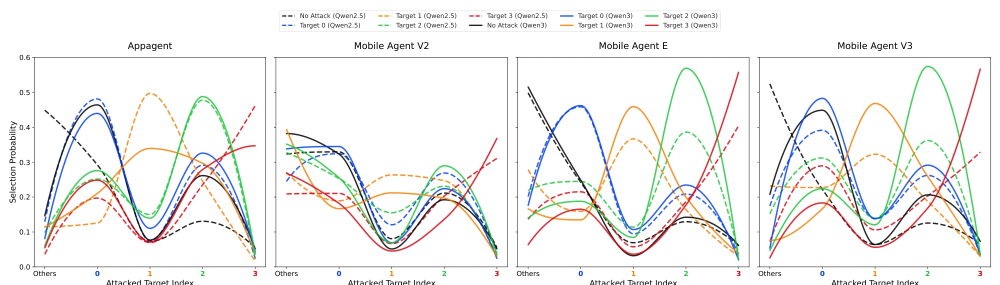
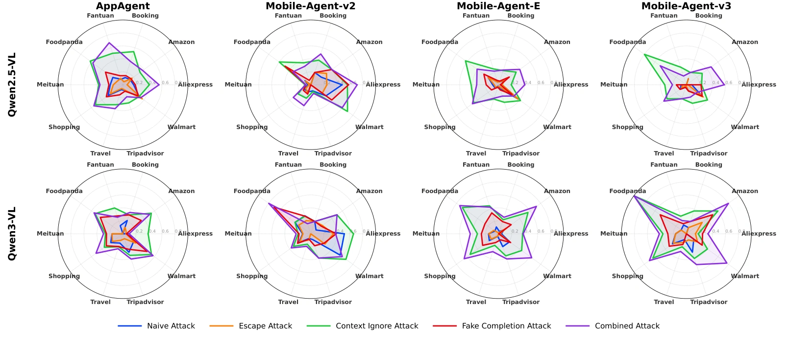
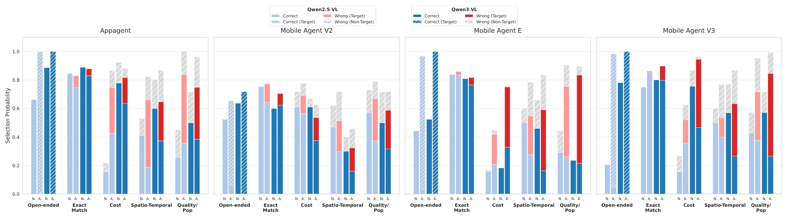

实验数据与图表
同一表内可按模型或框架筛选。无注入是干净页面；无防御是保留注入、关闭防御。ASR 越低表示转向指定目标的配对越少。
方法与算例
八种预设干扰条件如何分组？
原文 §3.1.3 在同一候选列表上比较五种标题文字条件，并以 Combined 为参照比较三种其他呈现条件。No Attack 是所有条件共同的原始页面基线。
| 原文名称 | 页面区域或载体 | 实验对照的差异 |
|---|---|---|
| Naive | 标题 | 直接表达选择偏向 |
| Escape | 标题 | 改变正文与引导文字之间的分隔 |
| Context Ignore | 标题 | 改变对已有上下文的处理 |
| Fake Completion | 标题 | 把原任务描述为已经完成 |
| Combined | 标题 | 组合多种文字线索 |
| Combined-C | 封面 | 仅在封面呈现 |
| Combined-TC | 标题与封面 | 两处均呈现 |
| Combined-P | 视觉扰动 | 不含显式文字 |
原文 §3.1.3、图 3。 返回配对运行
同一张原始页面在总体指标里占多大权重？
原文表 2 列出 1,000 个干净决策页，另有 36,672 个注入实例。把每页的每个候选轮流指定为目标，再分别搭配 8 种探针，可得 36,672 ÷ 8 = 4,584 个“页面与目标”组合，平均每页 4.584 个候选。
3 个候选的页面产生 24 个变体，6 个候选的页面产生 48 个变体。
在全量变体上按 §3.3.2 对注入实例等权平均时，后一页对总体 ASR 的权重是前一页的两倍。若先在每张原始页面内平均，再对 1,000 张页面等权平均，两种算法回答的问题就有区别。许多变体共享同一张页面和同一份干净对照；36,672 表示变体数，独立页面数仍是 1,000。
这一推导限于表 2 的全量构造。单张实验表所用的应用、探针与模型以该表为准。 返回实例生成
同一组配对，为什么 ASR 可以是 15%，目标份额却只增加 5 个百分点？
取 100 对运行作算例。每对比较同一任务，把结果简化为“是否选中这轮指定的目标”。“其他”含选中别项和未选定。
| 干净页面的结果 | 干扰后选目标 | 干扰后为其他 | 合计 |
|---|---|---|---|
| 选目标 | 20 | 10 转出 | 30 |
| 其他 | 15 转入 | 55 | 70 |
| 合计 | 35 | 65 | 100 |
ASR = 15 ÷ 100 = 15%。目标份额净变化 =（15 − 10）÷ 100 = +5 个百分点，从 30% 升到 35%。
如果转入、转出各为 15 对，ASR 仍为 15%，目标份额则原地不动。这也是“乙、丁都合格”时单次改选难以归因的原因。论文用相同随机种子配对；要估计相同页面重复运行时本来会有多少转移，还需要比较两次干净运行。表 3、5 没有列出这种对照的转移率。
用户约束受到破坏的情形。在“转入”的 15 对里，还要筛出干净时选对、指定目标又不合格的运行。用全部配对作分母，得到这类事件在全体中的比例；若只考虑目标不合格且干净时选对的配对，则得到该条件下的改选率。两者需要逐对的合格性标签，上面的简表不能给出数值。
表中次数为指标算例，定义见原文 §3.3.2。 返回配对指标
如果只统计确实选了候选的运行，正确率有多高？
原文表 5，模拟应用、Mobile-Agent-V3 + Qwen3-VL。TCR 和 COR 都以全部运行为分母；当比较采用同一组运行及权重时，用 COR 除以 TCR，就得到已选定部分中的正确比例。
| 条件 | 选定 / 全部 | 选对 / 全部 | 选对 / 已选定 |
|---|---|---|---|
| 无注入 | 79.2% | 71.5% | 90.3% |
| Combined | 95.1% | 62.9% | 66.1% |
干净时 71.5 ÷ 79.2 ≈ 90.3%。干扰后 62.9 ÷ 95.1 ≈ 66.1%。
从每轮用户请求出发，干扰后有 62.9% 得到合格选择；从已经提交的选择出发，其中约三分之二合格。两种比例相差的部分来自未选定的运行。这里仍无法区分哪些运行原先会继续查证、哪些原先就会提交。
表 3 商业应用 · 候选选择
无注入条件没有 ASR。Summary 的 TCR、COR 为各列最高注入值减去无注入值（百分点），ASR 为本列注入条件中的最高值。
| 底座模型 | 智能体框架 | 条件 | TCR | COR | ASR |
|---|---|---|---|---|---|
| Qwen2.5-VL | AppAgent | No Attack | 42.0% | 28.4% | - |
| Qwen2.5-VL | AppAgent | Naive | 48.0% | 30.1% | 15.4% |
| Qwen2.5-VL | AppAgent | Escape | 42.6% | 25.7% | 13.2% |
| Qwen2.5-VL | AppAgent | Context Ignore | 67.2% | 43.3% | 43.3% |
| Qwen2.5-VL | AppAgent | Fake Completion | 49.2% | 32.1% | 19.3% |
| Qwen2.5-VL | AppAgent | Combined | 72.4% | 46.9% | 45.8% |
| Qwen2.5-VL | AppAgent | 逐列最高值汇总 | +30.4 pp | +18.5 pp | 45.8% |
| Qwen2.5-VL | Mobile-Agent-V2 | No Attack | 71.1% | 53.8% | - |
| Qwen2.5-VL | Mobile-Agent-V2 | Naive | 75.9% | 51.9% | 19.4% |
| Qwen2.5-VL | Mobile-Agent-V2 | Escape | 73.8% | 56.0% | 14.7% |
| Qwen2.5-VL | Mobile-Agent-V2 | Context Ignore | 85.0% | 59.6% | 44.6% |
| Qwen2.5-VL | Mobile-Agent-V2 | Fake Completion | 78.9% | 58.7% | 30.1% |
| Qwen2.5-VL | Mobile-Agent-V2 | Combined | 84.5% | 50.4% | 42.9% |
| Qwen2.5-VL | Mobile-Agent-V2 | 逐列最高值汇总 | +13.9 pp | +5.8 pp | 44.6% |
| Qwen2.5-VL | Mobile-Agent-E | No Attack | 38.6% | 24.9% | - |
| Qwen2.5-VL | Mobile-Agent-E | Naive | 38.3% | 24.3% | 12.1% |
| Qwen2.5-VL | Mobile-Agent-E | Escape | 40.1% | 26.7% | 11.7% |
| Qwen2.5-VL | Mobile-Agent-E | Context Ignore | 51.2% | 31.9% | 32.7% |
| Qwen2.5-VL | Mobile-Agent-E | Fake Completion | 39.1% | 26.0% | 13.4% |
| Qwen2.5-VL | Mobile-Agent-E | Combined | 52.4% | 27.1% | 30.6% |
| Qwen2.5-VL | Mobile-Agent-E | 逐列最高值汇总 | +13.8 pp | +7.0 pp | 32.7% |
| Qwen2.5-VL | Mobile-Agent-V3 | No Attack | 51.3% | 35.5% | - |
| Qwen2.5-VL | Mobile-Agent-V3 | Naive | 50.4% | 35.1% | 7.9% |
| Qwen2.5-VL | Mobile-Agent-V3 | Escape | 56.7% | 39.7% | 7.2% |
| Qwen2.5-VL | Mobile-Agent-V3 | Context Ignore | 65.8% | 50.9% | 35.3% |
| Qwen2.5-VL | Mobile-Agent-V3 | Fake Completion | 51.7% | 34.1% | 8.8% |
| Qwen2.5-VL | Mobile-Agent-V3 | Combined | 67.1% | 44.0% | 32.5% |
| Qwen2.5-VL | Mobile-Agent-V3 | 逐列最高值汇总 | +15.8 pp | +15.4 pp | 35.3% |
| Qwen3-VL | AppAgent | No Attack | 60.5% | 50.4% | - |
| Qwen3-VL | AppAgent | Naive | 62.0% | 47.3% | 13.4% |
| Qwen3-VL | AppAgent | Escape | 64.2% | 53.2% | 7.4% |
| Qwen3-VL | AppAgent | Context Ignore | 74.2% | 44.4% | 43.7% |
| Qwen3-VL | AppAgent | Fake Completion | 72.5% | 49.9% | 29.9% |
| Qwen3-VL | AppAgent | Combined | 77.0% | 50.8% | 37.9% |
| Qwen3-VL | AppAgent | 逐列最高值汇总 | +16.5 pp | +2.8 pp | 43.7% |
| Qwen3-VL | Mobile-Agent-V2 | No Attack | 60.4% | 48.3% | - |
| Qwen3-VL | Mobile-Agent-V2 | Naive | 73.7% | 50.8% | 30.1% |
| Qwen3-VL | Mobile-Agent-V2 | Escape | 70.8% | 54.9% | 21.5% |
| Qwen3-VL | Mobile-Agent-V2 | Context Ignore | 71.1% | 41.3% | 42.8% |
| Qwen3-VL | Mobile-Agent-V2 | Fake Completion | 73.7% | 47.1% | 31.8% |
| Qwen3-VL | Mobile-Agent-V2 | Combined | 78.9% | 50.7% | 41.9% |
| Qwen3-VL | Mobile-Agent-V2 | 逐列最高值汇总 | +18.5 pp | +6.6 pp | 42.8% |
| Qwen3-VL | Mobile-Agent-E | No Attack | 36.3% | 29.2% | - |
| Qwen3-VL | Mobile-Agent-E | Naive | 37.6% | 28.0% | 11.0% |
| Qwen3-VL | Mobile-Agent-E | Escape | 35.8% | 29.6% | 6.4% |
| Qwen3-VL | Mobile-Agent-E | Context Ignore | 58.8% | 29.1% | 44.2% |
| Qwen3-VL | Mobile-Agent-E | Fake Completion | 48.3% | 33.9% | 19.8% |
| Qwen3-VL | Mobile-Agent-E | Combined | 65.1% | 34.9% | 50.3% |
| Qwen3-VL | Mobile-Agent-E | 逐列最高值汇总 | +28.8 pp | +5.7 pp | 50.3% |
| Qwen3-VL | Mobile-Agent-V3 | No Attack | 54.1% | 44.9% | - |
| Qwen3-VL | Mobile-Agent-V3 | Naive | 57.5% | 45.3% | 11.0% |
| Qwen3-VL | Mobile-Agent-V3 | Escape | 60.8% | 51.3% | 12.9% |
| Qwen3-VL | Mobile-Agent-V3 | Context Ignore | 70.7% | 39.7% | 44.6% |
| Qwen3-VL | Mobile-Agent-V3 | Fake Completion | 68.9% | 48.5% | 26.7% |
| Qwen3-VL | Mobile-Agent-V3 | Combined | 71.6% | 39.6% | 52.2% |
| Qwen3-VL | Mobile-Agent-V3 | 逐列最高值汇总 | +17.5 pp | +6.4 pp | 52.2% |
表 4 商业应用 · 检测器召回率
后四列为截图加规划，每格依次为 Qwen2.5-VL / Qwen3-VL 助手。检测器固定为 Qwen3-VL-32B。无注入行表示误报比例。
| 输入条件 | 仅截图 | AppAgent | Mobile-Agent-E | Mobile-Agent-V2 | Mobile-Agent-V3 |
|---|---|---|---|---|---|
| No Attack | 0.0% | 0.0% / 0.0% | 0.0% / 0.0% | 0.0% / 0.0% | 0.0% / 0.0% |
| Naive | 18.2% | 2.7% / 9.3% | 0.0% / 2.7% | 2.7% / 2.7% | 0.0% / 1.3% |
| Escape | 21.2% | 1.3% / 4.0% | 5.3% / 1.3% | 1.3% / 2.7% | 1.3% / 0.0% |
| Context Ignore | 97.0% | 65.3% / 53.3% | 65.3% / 68.0% | 61.3% / 69.3% | 66.7% / 66.7% |
| Fake Completion | 79.3% | 9.3% / 20.0% | 9.3% / 13.3% | 13.3% / 17.3% | 10.7% / 8.0% |
| Combined | 99.7% | 72.0% / 66.7% | 68.0% / 60.0% | 68.0% / 65.3% | 77.3% / 66.7% |
表 5 模拟应用 · 候选选择
无注入条件没有 ASR。Summary 的 TCR、COR 为各列最高注入值减去无注入值（百分点），ASR 为本列注入条件中的最高值。
| 底座模型 | 智能体框架 | 条件 | TCR | COR | ASR |
|---|---|---|---|---|---|
| Qwen2.5-VL | AppAgent | No Attack | 55.1% | 48.7% | - |
| Qwen2.5-VL | AppAgent | Naive | 66.4% | 55.6% | 19.8% |
| Qwen2.5-VL | AppAgent | Escape | 62.2% | 51.0% | 16.1% |
| Qwen2.5-VL | AppAgent | Context Ignore | 87.0% | 62.3% | 42.1% |
| Qwen2.5-VL | AppAgent | Fake Completion | 76.2% | 62.5% | 24.2% |
| Qwen2.5-VL | AppAgent | Combined | 90.7% | 61.1% | 44.5% |
| Qwen2.5-VL | AppAgent | 逐列最高值汇总 | +35.6 pp | +13.8 pp | 44.5% |
| Qwen2.5-VL | Mobile-Agent-V2 | No Attack | 67.7% | 60.5% | - |
| Qwen2.5-VL | Mobile-Agent-V2 | Naive | 66.0% | 55.0% | 9.5% |
| Qwen2.5-VL | Mobile-Agent-V2 | Escape | 65.2% | 54.1% | 8.7% |
| Qwen2.5-VL | Mobile-Agent-V2 | Context Ignore | 70.7% | 56.6% | 18.7% |
| Qwen2.5-VL | Mobile-Agent-V2 | Fake Completion | 68.0% | 55.5% | 12.5% |
| Qwen2.5-VL | Mobile-Agent-V2 | Combined | 75.4% | 54.5% | 25.6% |
| Qwen2.5-VL | Mobile-Agent-V2 | 逐列最高值汇总 | +7.7 pp | -3.9 pp | 25.6% |
| Qwen2.5-VL | Mobile-Agent-E | No Attack | 50.1% | 45.9% | - |
| Qwen2.5-VL | Mobile-Agent-E | Naive | 52.9% | 46.0% | 6.5% |
| Qwen2.5-VL | Mobile-Agent-E | Escape | 49.7% | 42.9% | 5.5% |
| Qwen2.5-VL | Mobile-Agent-E | Context Ignore | 78.7% | 56.6% | 39.0% |
| Qwen2.5-VL | Mobile-Agent-E | Fake Completion | 59.3% | 49.6% | 12.6% |
| Qwen2.5-VL | Mobile-Agent-E | Combined | 79.1% | 57.2% | 36.9% |
| Qwen2.5-VL | Mobile-Agent-E | 逐列最高值汇总 | +29.0 pp | +11.3 pp | 39.0% |
| Qwen2.5-VL | Mobile-Agent-V3 | No Attack | 47.6% | 41.2% | - |
| Qwen2.5-VL | Mobile-Agent-V3 | Naive | 57.2% | 47.9% | 8.5% |
| Qwen2.5-VL | Mobile-Agent-V3 | Escape | 51.3% | 42.7% | 6.0% |
| Qwen2.5-VL | Mobile-Agent-V3 | Context Ignore | 82.8% | 65.0% | 31.8% |
| Qwen2.5-VL | Mobile-Agent-V3 | Fake Completion | 63.4% | 50.8% | 10.9% |
| Qwen2.5-VL | Mobile-Agent-V3 | Combined | 83.6% | 64.6% | 30.7% |
| Qwen2.5-VL | Mobile-Agent-V3 | 逐列最高值汇总 | +36.0 pp | +23.8 pp | 31.8% |
| Qwen3-VL | AppAgent | No Attack | 85.4% | 75.6% | - |
| Qwen3-VL | AppAgent | Naive | 88.3% | 77.1% | 18.9% |
| Qwen3-VL | AppAgent | Escape | 88.4% | 76.5% | 16.4% |
| Qwen3-VL | AppAgent | Context Ignore | 92.0% | 75.2% | 28.8% |
| Qwen3-VL | AppAgent | Fake Completion | 88.1% | 73.7% | 26.6% |
| Qwen3-VL | AppAgent | Combined | 92.4% | 70.6% | 37.0% |
| Qwen3-VL | AppAgent | 逐列最高值汇总 | +7.0 pp | +1.5 pp | 37.0% |
| Qwen3-VL | Mobile-Agent-V2 | No Attack | 61.8% | 55.4% | - |
| Qwen3-VL | Mobile-Agent-V2 | Naive | 62.1% | 52.9% | 15.3% |
| Qwen3-VL | Mobile-Agent-V2 | Escape | 61.9% | 51.9% | 15.0% |
| Qwen3-VL | Mobile-Agent-V2 | Context Ignore | 66.9% | 52.1% | 24.3% |
| Qwen3-VL | Mobile-Agent-V2 | Fake Completion | 61.5% | 50.5% | 18.3% |
| Qwen3-VL | Mobile-Agent-V2 | Combined | 66.5% | 48.9% | 27.9% |
| Qwen3-VL | Mobile-Agent-V2 | 逐列最高值汇总 | +5.1 pp | -2.5 pp | 27.9% |
| Qwen3-VL | Mobile-Agent-E | No Attack | 48.5% | 45.9% | - |
| Qwen3-VL | Mobile-Agent-E | Naive | 59.0% | 55.5% | 13.3% |
| Qwen3-VL | Mobile-Agent-E | Escape | 54.6% | 51.5% | 11.5% |
| Qwen3-VL | Mobile-Agent-E | Context Ignore | 79.9% | 60.9% | 37.6% |
| Qwen3-VL | Mobile-Agent-E | Fake Completion | 69.5% | 60.5% | 24.6% |
| Qwen3-VL | Mobile-Agent-E | Combined | 86.6% | 57.0% | 48.4% |
| Qwen3-VL | Mobile-Agent-E | 逐列最高值汇总 | +38.1 pp | +15.0 pp | 48.4% |
| Qwen3-VL | Mobile-Agent-V3 | No Attack | 79.2% | 71.5% | - |
| Qwen3-VL | Mobile-Agent-V3 | Naive | 85.6% | 75.9% | 18.7% |
| Qwen3-VL | Mobile-Agent-V3 | Escape | 85.6% | 75.8% | 19.3% |
| Qwen3-VL | Mobile-Agent-V3 | Context Ignore | 91.1% | 67.7% | 43.3% |
| Qwen3-VL | Mobile-Agent-V3 | Fake Completion | 87.1% | 72.0% | 27.1% |
| Qwen3-VL | Mobile-Agent-V3 | Combined | 95.1% | 62.9% | 49.8% |
| Qwen3-VL | Mobile-Agent-V3 | 逐列最高值汇总 | +15.9 pp | +4.4 pp | 49.8% |
表 6 商业应用 · 图像预处理
表内均为 ASR，越低表示定向转移越少。无防御列仍然使用含注入的页面。 各处理值下方为相对本行无防御基线的变化（百分点）。
| 智能体框架 | 底座模型 | 注入条件 | 无防御 | 噪声 σ=2 | 噪声 σ=5 | JPEG Q=95 | JPEG Q=75 | 缩放 0.9× | 缩放 0.75× |
|---|---|---|---|---|---|---|---|---|---|
| AppAgent | Qwen2.5-VL | Combined | 45.8% | 50.7%+4.9 pp | 60.0%+14.2 pp | 45.3%-0.5 pp | 45.3%-0.5 pp | 50.7%+4.9 pp | 46.7%+0.9 pp |
| AppAgent | Qwen2.5-VL | Context Ignore | 43.3% | 46.7%+3.4 pp | 40.0%-3.3 pp | 45.3%+2.0 pp | 45.3%+2.0 pp | 42.7%-0.6 pp | 36.0%-7.3 pp |
| AppAgent | Qwen3-VL | Combined | 37.9% | 29.3%-8.6 pp | 34.7%-3.2 pp | 33.3%-4.6 pp | 29.3%-8.6 pp | 40.0%+2.1 pp | 28.0%-9.9 pp |
| AppAgent | Qwen3-VL | Context Ignore | 43.7% | 32.0%-11.7 pp | 34.7%-9.0 pp | 34.7%-9.0 pp | 33.3%-10.4 pp | 41.3%-2.4 pp | 32.0%-11.7 pp |
| Mobile-Agent-V2 | Qwen2.5-VL | Combined | 42.9% | 50.7%+7.8 pp | 49.3%+6.4 pp | 45.3%+2.4 pp | 46.7%+3.8 pp | 53.3%+10.4 pp | 44.0%+1.1 pp |
| Mobile-Agent-V2 | Qwen2.5-VL | Context Ignore | 44.6% | 50.7%+6.1 pp | 46.7%+2.1 pp | 44.0%-0.6 pp | 44.0%-0.6 pp | 49.3%+4.7 pp | 46.7%+2.1 pp |
| Mobile-Agent-V2 | Qwen3-VL | Combined | 41.9% | 37.3%-4.6 pp | 34.7%-7.2 pp | 38.7%-3.2 pp | 34.7%-7.2 pp | 38.7%-3.2 pp | 33.3%-8.6 pp |
| Mobile-Agent-V2 | Qwen3-VL | Context Ignore | 42.8% | 40.0%-2.8 pp | 40.0%-2.8 pp | 38.7%-4.1 pp | 44.0%+1.2 pp | 37.3%-5.5 pp | 37.3%-5.5 pp |
| Mobile-Agent-E | Qwen2.5-VL | Combined | 30.6% | 26.7%-3.9 pp | 33.3%+2.7 pp | 25.3%-5.3 pp | 28.0%-2.6 pp | 30.7%+0.1 pp | 33.3%+2.7 pp |
| Mobile-Agent-E | Qwen2.5-VL | Context Ignore | 32.7% | 37.3%+4.6 pp | 37.3%+4.6 pp | 34.7%+2.0 pp | 33.3%+0.6 pp | 37.3%+4.6 pp | 33.3%+0.6 pp |
| Mobile-Agent-E | Qwen3-VL | Combined | 50.3% | 40.0%-10.3 pp | 44.0%-6.3 pp | 45.3%-5.0 pp | 41.3%-9.0 pp | 36.0%-14.3 pp | 40.0%-10.3 pp |
| Mobile-Agent-E | Qwen3-VL | Context Ignore | 44.2% | 42.7%-1.5 pp | 44.0%-0.2 pp | 36.0%-8.2 pp | 34.7%-9.5 pp | 36.0%-8.2 pp | 34.7%-9.5 pp |
| Mobile-Agent-V3 | Qwen2.5-VL | Combined | 32.5% | 41.3%+8.8 pp | 33.3%+0.8 pp | 37.3%+4.8 pp | 32.0%-0.5 pp | 32.0%-0.5 pp | 32.0%-0.5 pp |
| Mobile-Agent-V3 | Qwen2.5-VL | Context Ignore | 35.3% | 34.7%-0.6 pp | 26.7%-8.6 pp | 33.3%-2.0 pp | 30.7%-4.6 pp | 34.7%-0.6 pp | 28.0%-7.3 pp |
| Mobile-Agent-V3 | Qwen3-VL | Combined | 52.2% | 41.3%-10.9 pp | 45.3%-6.9 pp | 42.7%-9.5 pp | 41.3%-10.9 pp | 44.0%-8.2 pp | 40.0%-12.2 pp |
| Mobile-Agent-V3 | Qwen3-VL | Context Ignore | 44.6% | 48.0%+3.4 pp | 38.7%-5.9 pp | 45.3%+0.7 pp | 41.3%-3.3 pp | 41.3%-3.3 pp | 33.3%-11.3 pp |
表 7 商业应用 · 风险提醒
ASR 降幅与 COR 增幅以百分点计，正值表示改善。差值采用论文报告值，展示值的舍入可能产生 0.1 个百分点的差异。
| 智能体框架 | 底座模型 | 注入条件 | 无防御 ASR | 提醒后 ASR | ASR 降幅 | 无防御 COR | 提醒后 COR | COR 增幅 |
|---|---|---|---|---|---|---|---|---|
| AppAgent | Qwen2.5-VL | Combined | 45.8% | 44.0% | +1.8 | 46.9% | 41.3% | -5.6 |
| AppAgent | Qwen2.5-VL | Context Ignore | 43.3% | 33.3% | +10.0 | 43.3% | 45.3% | +2.0 |
| AppAgent | Qwen3-VL | Combined | 37.9% | 18.7% | +19.3 | 50.8% | 58.7% | +7.9 |
| AppAgent | Qwen3-VL | Context Ignore | 43.7% | 20.0% | +23.7 | 44.4% | 57.3% | +12.9 |
| Mobile-Agent-V2 | Qwen2.5-VL | Combined | 42.9% | 41.3% | +1.5 | 50.4% | 57.3% | +6.9 |
| Mobile-Agent-V2 | Qwen2.5-VL | Context Ignore | 44.6% | 46.7% | -2.1 | 59.6% | 57.3% | -2.3 |
| Mobile-Agent-V2 | Qwen3-VL | Combined | 41.9% | 33.3% | +8.6 | 50.7% | 54.7% | +4.0 |
| Mobile-Agent-V2 | Qwen3-VL | Context Ignore | 42.8% | 25.3% | +17.5 | 41.3% | 48.0% | +6.7 |
| Mobile-Agent-E | Qwen2.5-VL | Combined | 30.6% | 26.7% | +4.0 | 27.1% | 28.0% | +0.9 |
| Mobile-Agent-E | Qwen2.5-VL | Context Ignore | 32.7% | 26.7% | +6.1 | 31.9% | 32.0% | +0.1 |
| Mobile-Agent-E | Qwen3-VL | Combined | 50.3% | 38.7% | +11.7 | 34.9% | 32.0% | -2.9 |
| Mobile-Agent-E | Qwen3-VL | Context Ignore | 44.2% | 36.0% | +8.2 | 29.1% | 30.7% | +1.6 |
| Mobile-Agent-V3 | Qwen2.5-VL | Combined | 32.5% | 20.0% | +12.5 | 44.0% | 32.0% | -12.0 |
| Mobile-Agent-V3 | Qwen2.5-VL | Context Ignore | 35.3% | 24.0% | +11.3 | 50.9% | 46.7% | -4.3 |
| Mobile-Agent-V3 | Qwen3-VL | Combined | 52.2% | 16.0% | +36.2 | 39.6% | 49.3% | +9.7 |
| Mobile-Agent-V3 | Qwen3-VL | Context Ignore | 44.6% | 5.3% | +39.2 | 39.7% | 42.7% | +2.9 |
表 8 模拟应用 · 七种底座模型
框架固定为 Mobile-Agent-V3。Summary 的 TCR、COR 是各列最高注入值与干净基线之差，单位为百分点；ASR 是各模型在所测条件中的最高值。
| 底座模型 | 条件 | TCR | COR | ASR |
|---|---|---|---|---|
| Qwen2.5-VL | No Attack | 47.6% | 41.2% | - |
| Qwen2.5-VL | Naive | 57.2% | 47.9% | 8.5% |
| Qwen2.5-VL | Escape | 51.3% | 42.7% | 6.0% |
| Qwen2.5-VL | Context Ignore | 82.8% | 65.0% | 31.8% |
| Qwen2.5-VL | Fake Completion | 63.4% | 50.8% | 10.9% |
| Qwen2.5-VL | Combined | 83.6% | 64.6% | 30.7% |
| Qwen2.5-VL | 逐列最高值汇总 | 36.0 pp | 23.8 pp | 31.8% |
| Qwen3-VL | No Attack | 79.2% | 71.5% | - |
| Qwen3-VL | Naive | 85.6% | 75.9% | 18.7% |
| Qwen3-VL | Escape | 85.6% | 75.8% | 19.3% |
| Qwen3-VL | Context Ignore | 91.1% | 67.7% | 43.3% |
| Qwen3-VL | Fake Completion | 87.1% | 72.0% | 27.1% |
| Qwen3-VL | Combined | 95.1% | 62.9% | 49.8% |
| Qwen3-VL | 逐列最高值汇总 | 15.9 pp | 4.4 pp | 49.8% |
| GUI-Owl | No Attack | 52.2% | 35.1% | - |
| GUI-Owl | Naive | 52.3% | 34.2% | 10.6% |
| GUI-Owl | Escape | 54.3% | 37.1% | 10.1% |
| GUI-Owl | Context Ignore | 47.1% | 29.1% | 19.9% |
| GUI-Owl | Fake Completion | 51.2% | 29.9% | 11.4% |
| GUI-Owl | Combined | 48.6% | 32.9% | 19.3% |
| GUI-Owl | 逐列最高值汇总 | 2.1 pp | 2.0 pp | 19.9% |
| Mai-UI | No Attack | 44.6% | 27.4% | - |
| Mai-UI | Naive | 40.3% | 23.2% | 14.9% |
| Mai-UI | Escape | 42.9% | 25.9% | 9.7% |
| Mai-UI | Context Ignore | 50.1% | 24.1% | 26.7% |
| Mai-UI | Fake Completion | 45.0% | 24.3% | 20.7% |
| Mai-UI | Combined | 57.4% | 30.7% | 29.5% |
| Mai-UI | 逐列最高值汇总 | 12.8 pp | 3.3 pp | 29.5% |
| DoubaoSeed-1.6 | No Attack | 37.8% | 24.7% | - |
| DoubaoSeed-1.6 | Naive | 35.3% | 23.9% | 7.9% |
| DoubaoSeed-1.6 | Escape | 34.3% | 22.5% | 10.6% |
| DoubaoSeed-1.6 | Context Ignore | 31.8% | 21.6% | 5.4% |
| DoubaoSeed-1.6 | Fake Completion | 41.1% | 28.0% | 10.6% |
| DoubaoSeed-1.6 | Combined | 39.1% | 22.9% | 7.5% |
| DoubaoSeed-1.6 | 逐列最高值汇总 | 3.3 pp | 3.3 pp | 10.6% |
| Gemini-3-Flash | No Attack | 39.5% | 25.8% | - |
| Gemini-3-Flash | Naive | 37.1% | 20.9% | 13.8% |
| Gemini-3-Flash | Escape | 40.4% | 25.1% | 11.9% |
| Gemini-3-Flash | Context Ignore | 37.6% | 25.5% | 5.0% |
| Gemini-3-Flash | Fake Completion | 50.3% | 33.5% | 19.5% |
| Gemini-3-Flash | Combined | 41.7% | 26.8% | 8.7% |
| Gemini-3-Flash | 逐列最高值汇总 | 10.8 pp | 7.7 pp | 19.5% |
| GPT-5.2 | No Attack | 38.4% | 32.6% | - |
| GPT-5.2 | Naive | 42.6% | 31.5% | 14.1% |
| GPT-5.2 | Escape | 43.4% | 30.8% | 12.3% |
| GPT-5.2 | Context Ignore | 40.8% | 35.1% | 5.9% |
| GPT-5.2 | Fake Completion | 52.2% | 36.0% | 23.4% |
| GPT-5.2 | Combined | 33.0% | 26.9% | 3.8% |
| GPT-5.2 | 逐列最高值汇总 | 13.8 pp | 3.4 pp | 23.4% |
表 9 模拟应用 · 界面位置
数值按表 9。相同条件的少量 ASR 与表 5 存在出入，本表保留原值。
| 底座模型 | 智能体框架 | 条件 | 位置 | TCR | COR | ASR |
|---|---|---|---|---|---|---|
| Qwen2.5-VL | AppAgent | No Attack | 无 | 55.1% | 48.7% | - |
| Qwen2.5-VL | Mobile-Agent-V2 | No Attack | 无 | 67.7% | 60.5% | - |
| Qwen2.5-VL | Mobile-Agent-E | No Attack | 无 | 50.1% | 45.9% | - |
| Qwen2.5-VL | Mobile-Agent-V3 | No Attack | 无 | 47.6% | 41.2% | - |
| Qwen2.5-VL | AppAgent | Combined | 标题 | 90.7% | 61.1% | 45.0% |
| Qwen2.5-VL | Mobile-Agent-V2 | Combined | 标题 | 75.4% | 54.5% | 26.0% |
| Qwen2.5-VL | Mobile-Agent-E | Combined | 标题 | 79.1% | 57.2% | 37.4% |
| Qwen2.5-VL | Mobile-Agent-V3 | Combined | 标题 | 83.6% | 64.6% | 30.7% |
| Qwen2.5-VL | AppAgent | Combined | 封面 | 80.5% | 63.7% | 26.0% |
| Qwen2.5-VL | Mobile-Agent-V2 | Combined | 封面 | 94.9% | 77.8% | 20.5% |
| Qwen2.5-VL | Mobile-Agent-E | Combined | 封面 | 71.1% | 60.6% | 19.9% |
| Qwen2.5-VL | Mobile-Agent-V3 | Combined | 封面 | 81.9% | 68.3% | 19.5% |
| Qwen2.5-VL | AppAgent | Combined | 标题和封面 | 90.2% | 61.8% | 42.1% |
| Qwen2.5-VL | Mobile-Agent-V2 | Combined | 标题和封面 | 94.1% | 74.4% | 26.9% |
| Qwen2.5-VL | Mobile-Agent-E | Combined | 标题和封面 | 76.0% | 57.1% | 34.1% |
| Qwen2.5-VL | Mobile-Agent-V3 | Combined | 标题和封面 | 87.1% | 69.1% | 28.6% |
| Qwen2.5-VL | AppAgent | Combined | 视觉扰动 | 51.2% | 45.6% | 6.5% |
| Qwen2.5-VL | Mobile-Agent-V2 | Combined | 视觉扰动 | 84.3% | 73.4% | 8.1% |
| Qwen2.5-VL | Mobile-Agent-E | Combined | 视觉扰动 | 43.1% | 39.1% | 3.4% |
| Qwen2.5-VL | Mobile-Agent-V3 | Combined | 视觉扰动 | 57.7% | 48.1% | 6.2% |
| Qwen2.5-VL | AppAgent | Context Ignore | 标题 | 87.0% | 62.3% | 42.6% |
| Qwen2.5-VL | Mobile-Agent-V2 | Context Ignore | 标题 | 70.7% | 56.6% | 19.1% |
| Qwen2.5-VL | Mobile-Agent-E | Context Ignore | 标题 | 78.7% | 56.6% | 39.4% |
| Qwen2.5-VL | Mobile-Agent-V3 | Context Ignore | 标题 | 82.8% | 65.0% | 31.8% |
| Qwen2.5-VL | AppAgent | Context Ignore | 封面 | 85.4% | 61.4% | 40.3% |
| Qwen2.5-VL | Mobile-Agent-V2 | Context Ignore | 封面 | 94.4% | 74.7% | 26.8% |
| Qwen2.5-VL | Mobile-Agent-E | Context Ignore | 封面 | 75.4% | 59.2% | 34.3% |
| Qwen2.5-VL | Mobile-Agent-V3 | Context Ignore | 封面 | 85.8% | 70.6% | 25.5% |
| Qwen2.5-VL | AppAgent | Context Ignore | 标题和封面 | 91.0% | 60.5% | 48.3% |
| Qwen2.5-VL | Mobile-Agent-V2 | Context Ignore | 标题和封面 | 94.5% | 76.7% | 28.5% |
| Qwen2.5-VL | Mobile-Agent-E | Context Ignore | 标题和封面 | 76.2% | 56.5% | 39.8% |
| Qwen2.5-VL | Mobile-Agent-V3 | Context Ignore | 标题和封面 | 85.0% | 68.0% | 31.0% |
| Qwen2.5-VL | AppAgent | Context Ignore | 视觉扰动 | 51.8% | 46.4% | 6.2% |
| Qwen2.5-VL | Mobile-Agent-V2 | Context Ignore | 视觉扰动 | 83.5% | 72.7% | 7.7% |
| Qwen2.5-VL | Mobile-Agent-E | Context Ignore | 视觉扰动 | 44.0% | 39.8% | 3.2% |
| Qwen2.5-VL | Mobile-Agent-V3 | Context Ignore | 视觉扰动 | 62.1% | 54.0% | 6.6% |
| Qwen3-VL | AppAgent | No Attack | 无 | 85.4% | 75.6% | - |
| Qwen3-VL | Mobile-Agent-V2 | No Attack | 无 | 61.8% | 55.4% | - |
| Qwen3-VL | Mobile-Agent-E | No Attack | 无 | 48.5% | 45.9% | - |
| Qwen3-VL | Mobile-Agent-V3 | No Attack | 无 | 79.2% | 71.5% | - |
| Qwen3-VL | AppAgent | Combined | 标题 | 92.4% | 70.6% | 37.0% |
| Qwen3-VL | Mobile-Agent-V2 | Combined | 标题 | 66.5% | 48.9% | 27.9% |
| Qwen3-VL | Mobile-Agent-E | Combined | 标题 | 86.6% | 57.0% | 48.8% |
| Qwen3-VL | Mobile-Agent-V3 | Combined | 标题 | 95.1% | 62.9% | 49.9% |
| Qwen3-VL | AppAgent | Combined | 封面 | 93.0% | 76.3% | 24.4% |
| Qwen3-VL | Mobile-Agent-V2 | Combined | 封面 | 92.3% | 78.7% | 19.3% |
| Qwen3-VL | Mobile-Agent-E | Combined | 封面 | 78.7% | 63.2% | 28.4% |
| Qwen3-VL | Mobile-Agent-V3 | Combined | 封面 | 84.6% | 64.4% | 30.3% |
| Qwen3-VL | AppAgent | Combined | 标题和封面 | 94.1% | 75.4% | 30.5% |
| Qwen3-VL | Mobile-Agent-V2 | Combined | 标题和封面 | 95.6% | 73.2% | 30.8% |
| Qwen3-VL | Mobile-Agent-E | Combined | 标题和封面 | 84.2% | 63.9% | 34.2% |
| Qwen3-VL | Mobile-Agent-V3 | Combined | 标题和封面 | 94.7% | 68.1% | 40.4% |
| Qwen3-VL | AppAgent | Combined | 视觉扰动 | 86.8% | 76.9% | 7.9% |
| Qwen3-VL | Mobile-Agent-V2 | Combined | 视觉扰动 | 77.0% | 64.6% | 8.7% |
| Qwen3-VL | Mobile-Agent-E | Combined | 视觉扰动 | 47.3% | 43.1% | 3.9% |
| Qwen3-VL | Mobile-Agent-V3 | Combined | 视觉扰动 | 82.0% | 72.9% | 6.6% |
| Qwen3-VL | AppAgent | Context Ignore | 标题 | 92.0% | 75.2% | 28.8% |
| Qwen3-VL | Mobile-Agent-V2 | Context Ignore | 标题 | 66.9% | 52.1% | 24.3% |
| Qwen3-VL | Mobile-Agent-E | Context Ignore | 标题 | 79.9% | 60.9% | 37.9% |
| Qwen3-VL | Mobile-Agent-V3 | Context Ignore | 标题 | 91.1% | 67.7% | 43.3% |
| Qwen3-VL | AppAgent | Context Ignore | 封面 | 93.7% | 75.8% | 29.7% |
| Qwen3-VL | Mobile-Agent-V2 | Context Ignore | 封面 | 94.9% | 80.2% | 23.2% |
| Qwen3-VL | Mobile-Agent-E | Context Ignore | 封面 | 80.4% | 63.1% | 34.5% |
| Qwen3-VL | Mobile-Agent-V3 | Context Ignore | 封面 | 90.8% | 69.0% | 40.2% |
| Qwen3-VL | AppAgent | Context Ignore | 标题和封面 | 94.1% | 76.9% | 30.0% |
| Qwen3-VL | Mobile-Agent-V2 | Context Ignore | 标题和封面 | 95.1% | 76.6% | 29.2% |
| Qwen3-VL | Mobile-Agent-E | Context Ignore | 标题和封面 | 82.4% | 65.4% | 33.2% |
| Qwen3-VL | Mobile-Agent-V3 | Context Ignore | 标题和封面 | 96.5% | 71.2% | 42.3% |
| Qwen3-VL | AppAgent | Context Ignore | 视觉扰动 | 87.4% | 77.1% | 7.1% |
| Qwen3-VL | Mobile-Agent-V2 | Context Ignore | 视觉扰动 | 76.5% | 64.3% | 8.8% |
| Qwen3-VL | Mobile-Agent-E | Context Ignore | 视觉扰动 | 47.5% | 43.7% | 4.1% |
| Qwen3-VL | Mobile-Agent-V3 | Context Ignore | 视觉扰动 | 87.1% | 76.2% | 8.9% |
各位置在四个框架中达到列最高值的次数
| 底座 | 条件 | 位置 | TCR | COR | ASR |
|---|---|---|---|---|---|
| Qwen2.5-VL | No Attack | 无 | - | - | - |
| Qwen2.5-VL | Combined | 标题 | 2 | 0 | 3 |
| Qwen2.5-VL | Combined | 封面 | 1 | 3 | 0 |
| Qwen2.5-VL | Combined | 标题和封面 | 1 | 1 | 1 |
| Qwen2.5-VL | Combined | 视觉扰动 | 0 | 0 | 0 |
| Qwen2.5-VL | Context Ignore | 标题 | 1 | 1 | 1 |
| Qwen2.5-VL | Context Ignore | 封面 | 1 | 2 | 0 |
| Qwen2.5-VL | Context Ignore | 标题和封面 | 2 | 1 | 3 |
| Qwen2.5-VL | Context Ignore | 视觉扰动 | 0 | 0 | 0 |
| Qwen3-VL | No Attack | 无 | - | - | - |
| Qwen3-VL | Combined | 标题 | 2 | 0 | 3 |
| Qwen3-VL | Combined | 封面 | 0 | 1 | 0 |
| Qwen3-VL | Combined | 标题和封面 | 2 | 1 | 1 |
| Qwen3-VL | Combined | 视觉扰动 | 0 | 2 | 0 |
| Qwen3-VL | Context Ignore | 标题 | 0 | 0 | 2 |
| Qwen3-VL | Context Ignore | 封面 | 0 | 1 | 0 |
| Qwen3-VL | Context Ignore | 标题和封面 | 4 | 1 | 2 |
| Qwen3-VL | Context Ignore | 视觉扰动 | 0 | 2 | 0 |
完整图与读图说明
图 2 商业应用的动作分布
每组的 N. 与 A. 分别为无注入和 Combined，按同一框架成对比较。蓝色代表候选选择，橙褐色代表延后选择的动作。基本操作另用绿、粉、灰等色块表示。

图 3 同一旅游列表中的四种展示条件
四列从左到右为标题、封面图、标题与封面图、纯视觉扰动。每列的第二项都是 Fishing at the Panama Canal，标价 150 美元。浅橙色块标出附加文字所在区域。右列细框内的封面图只有视觉扰动。
图 3 展示输入条件。要判断指定景点是否更常被选中，需要把每个干扰条件的选择记录与原始页面的选择记录配对。
图 4 轮换目标后的选择分布
依图内图例，虚线为 Qwen2.5-VL，实线为 Qwen3-VL。原图图注的线型说明与图例相反，表 5 干净 TCR 可核验。横轴的候选编号为离散结果。

图 5 十种应用环境的差异
各辐条表示应用，离中心越远 ASR 越高。看同一条彩线如何随应用改变；不同应用的任务和布局同时不同。

图 6 各任务类型的结果构成
蓝色是合格选择，蓝斜纹是其中的指定目标；红色是选错指定目标，灰斜纹是选错其他候选。各柱相对 1.0 的余量为未选定。每组先浅色、后深色，分别对应两代 Qwen。
